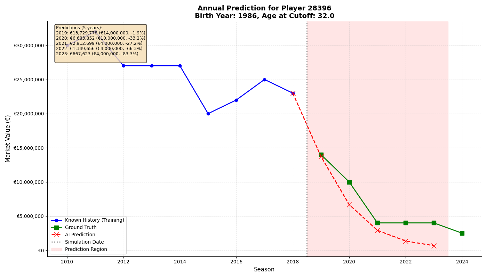

MoneyBall
⚽ Football transfer market price forecasting
MoneyBall Edition: Forecasting football players' market values using deep neural networks (DNN).
📖 Introduction
This project applies Deep Learning to football economics. The task is to forecast the evolution of football players' market values over time, simulating future scenarios or testing predictive capabilities on historical data.
Unlike standard linear models like ARIMA, this system uses varius DNN models such as LSTM (Long Short-Term Memory), Bidirectional LSTM, Gated Recurent Unit (GRU) network capable of:
- Learning complex temporal patterns from price history (one value per year, the max one);
- Integrating biological age as a deterministic factor for value growth or decline;
🧠 Methodology & Architecture
The DNN models moves beyond simple price trend analysis by understanding the context of player aging.
Input Features
The DNN models are multivariate. For each time step, it processes:
- Market Value (Scaled Log): The market value, normalized and logarithmically transformed (to handle the variance between top players and lower-tier players).
- Age (Scaled): The player's age at that specific moment.
Recursive Prediction (Time Travel)
To predict values 1, 2 or more years into the future, the system uses a Sliding Window approach:
- Predicts the value for year $T+1$.
- Deterministic calculation of the age the player will be in year $T+1$.
- Uses the predicted value and the new calculated age as input to predict year $T+2$.
This allows the simulation of growth curves for young talents and decline curves for veterans.
📊 Key Features
- Time Travel Simulation: By setting a
CUTOFF_YEAR(e.g., 2018), the model trains only on past data and attempts to guess the "known future", allowing for a direct comparison between AI Prediction and Ground Truth. - Age-Aware: The model learns that a value increase at 20 years old has a different weight and trajectory than an increase at 32 years old.
- Visual Validation: Automatic generation of plots to visually compare performance.
🛠️ Installation
Ensure you have Python installed (version 3.12 or older is recommended for compatibility). Clone the repository and install dependencies:
git clone https://github.com/FraDepe/MoneyBall.git
cd MoneyBall
python -m venv venv #Recomended
source ./venv/bin/activate (Unix) #Recomended
pip install -r requirements.txt
📂 Project Structure
├── csv
│ ├── grid_search_advanced_results.csv
│ ├── models_evaluation.csv
│ └── raw
│ ├── player_stats_all_seasons.csv
│ ├── player_stats_all_seasons_formatted.csv
│ ├── player_stats_over_time_with_birth_ga.csv
│ ├── players_values_over_time.csv
│ ├── players_values_over_time_with_birth_and_position.csv
│ └── players_values_over_time_with_birth.csv
├── LICENSE
├── plots
│ ├── ltsm_v1_results
│ ├── ltsm_v2_results
│ └── raw_dataset_stats
├── README.md
├── requirements.txt
└── src
├── ArimaModel.py
├── DataProcessor.py
├── dataset_analysis.py
├── dataset.py
├── FeatureEngineer.py
├── GRUModel.py
├── LSTMModel.py
├── main.py
├── MarketValuePredictor.py
└── ModelEvaluation.py
🚀 Usage
Main parameters:
config = {
'cutoff_year': 2018,
'prediction_years': 5,
'n_steps': 3,
'data_frequency': 'annual', # Correct values: {'annual', 'semiannual'}
'model_file': 'lstm_model.keras',
'price_scaler_file': 'price_scaler.gz',
'age_scaler_file': 'age_scaler.gz',
'data_path': './csv/raw/players_values_over_time_with_birth.csv',
'force_retrain': True,
'min_completeness': 0.0, # For semiannual: minimum data completeness (0.0 to 1.0)
'include_complete_validation' : True,
'include_random_sample_plots' : False,
'plot_player_id_base' : None,
'ltsm_stationarity': False,
}
To start training and evaluation:
python ./src/main.py
Note 1: On the first run, the script will train the model and save the weights (.keras) and scalers (.gz). Subsequent runs will load the saved models to save time. Use parameter force_retrain to force the train of the model.
Note 2: As the code is the default is Bidirectional LSTM, to run ARIMA go to inside the main.py file and change the run_ltsm_pipeline() to run_arima_pipeline(). For the other models, like Normal LSTM or GRU, change them directly in the model attribute of the MarketValuePredictor.py class.
📈 Example Output
The script outputs error metrics to evaluate reliability if include_complete_validation parameter is set to true. An example result is the following:
--- Evaluating model performance ---
MAE (Mean Absolute Error): € 2,173,757.12
RMSE (Root Mean Squared Error): € 6,031,437.74
MAPE (Mean Absolute Percentage Error): 62.35%
Moreover, two choise for ploting are avalable make three plots of three random players or select a player to plit through the parameter plot_player_id_base. An example plot is the following:
